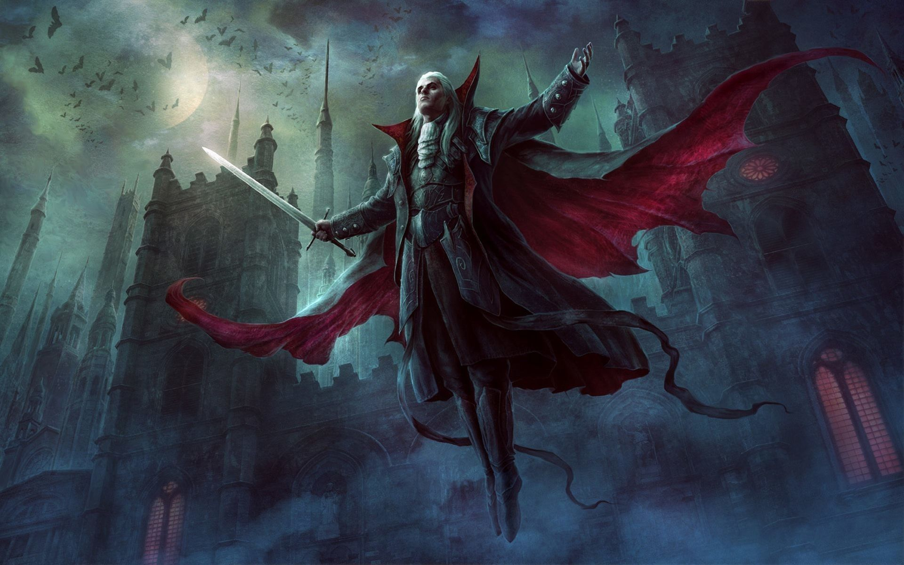

Attributes:
- Heath 660, Mana 255
- Strength scale 7/10
- Agility speed 9/10
- Intelligence 9/10
Vampires

Once the sun goes down, the Vampires Clans rises from the dark. Charging through the shadowy forests looking for
someone to tear.
On their wings, they very swift creatures with sharp talons and fangs. This creature is to be feared the most.
They are also intelligent and cunning, however they are easily burnt out.
Blood thirsty creature that fears nothing-except the sun.
"ARRRR!!!!" As it wakes!
Attributes:
Sun tears them up like a piece of paper, they lack protective armor as they like to be light and swift.
Also, werewolf bites are lethal to them, can cause death if not dealt in 20mins!
Natural enemies includes:
To become one of them is the sacrifice you have to make, to be powerful enough to defeat the Witch and its dominions, and ultimately save the wondrous angel princess!